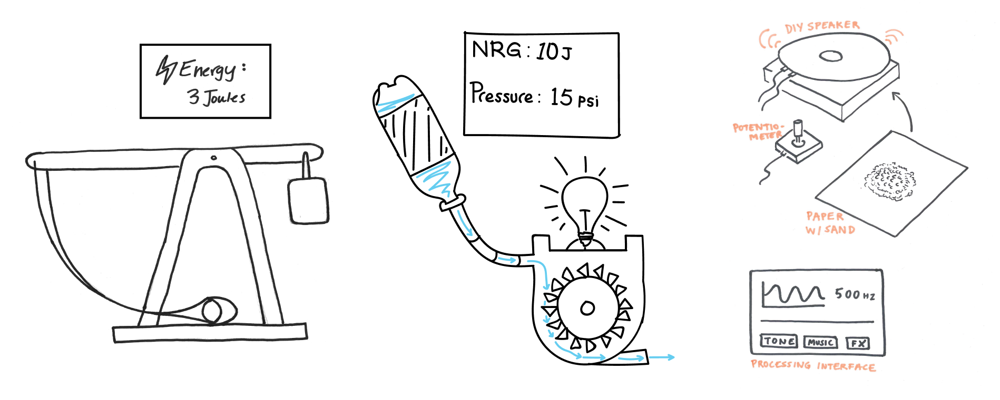
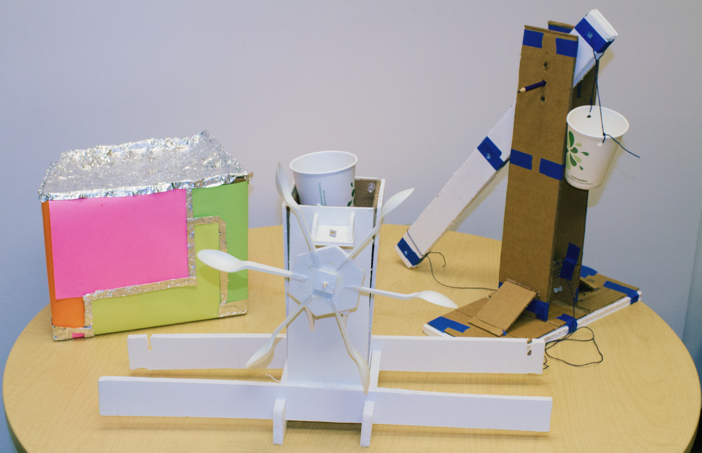
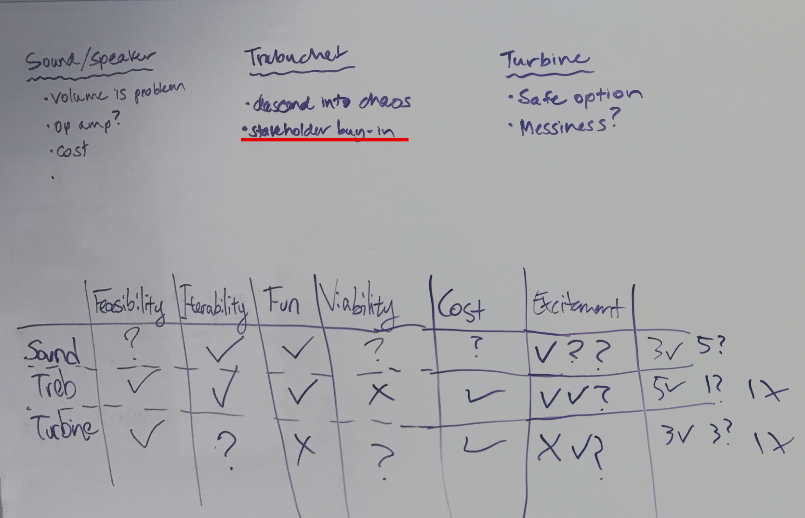
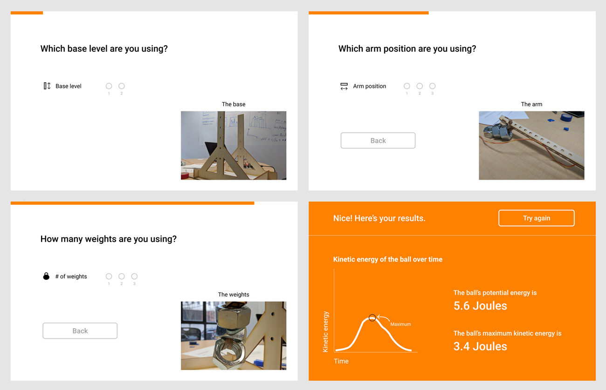
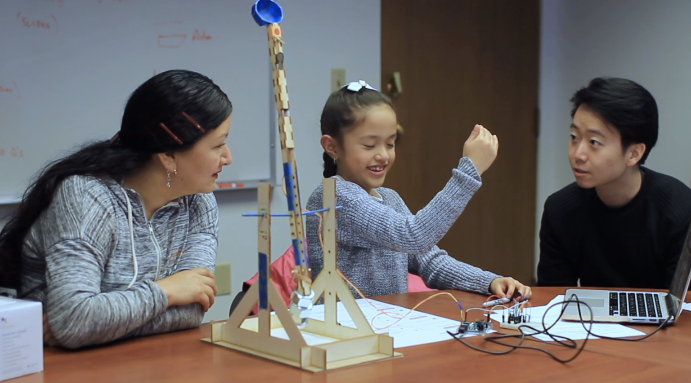
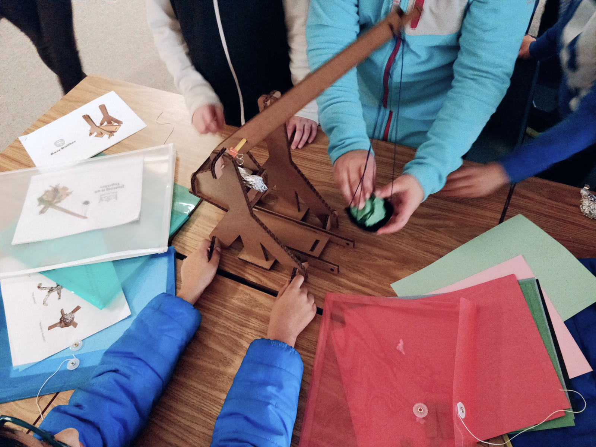
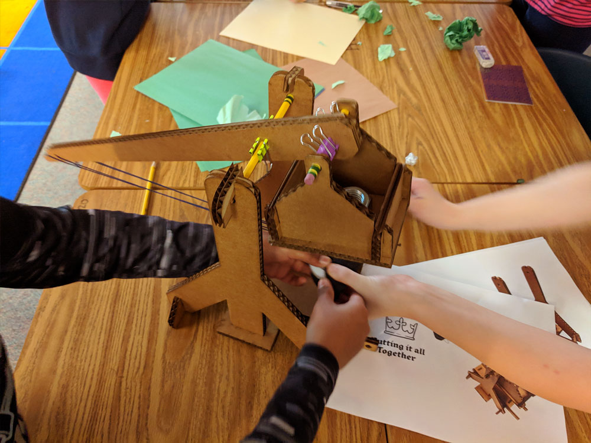

Design and prototype of a $4 trebuchet kit for teaching physics in a 4th grade American classroom.
Created in partnership with
Role
Project management
Usability study
Prototyping
Product design
Teammates
Oliver Engel
Sakshat Goyal
Duration
10 weeks
Client
Microsoft Education
Advisors
Adi Azulay
Michael P. Smith
Jon Froehlich
Product video
We created a papercraft trebuchet that can be easily assembled with household and classroom materials, and a data-visualization companion web app built using P5.JS that could track the kinetic and potential energy of the trebuchet real time.
The fine print
The final cost of the trebuchet came out to be $11.23 for the whole build. However we learned from prototyping that this activity is best completed in a group. We found the ideal group size to be three 3-5th grade students, which would lower the cost to under $4 per student per kit.
As part of the kit, we also created a comprehensive instruction booklet for teachers. The booklet includes step-by-step instructions on how to assemble the trebuchet, has information on how to set-up the Arduino and accelerometer to connect to the trebuchet body.
I took ownership over the product direction, in addition to management tasks such as scheduling, outreaching, stakeholder communication, and the creation of prototyping session guides. I also played an instrumental role in the content strategy for the instruction manual, and the narrative of the project.
Design prompt from Microsoft Education
Develop a hands-on lesson plan that aligns with the NGSS Science Standards for 3rd to 6th graders.
The kit also has the following constraints; it needs to contain suitable data visualization (software) and physical computing (hardware) components; the kit needs to be constructed from material that is readily available in a classroom; the kit should only make use of tools that can be found in the classroom; it should cost at most $10 USD per student.
Objectives:
Gather evidence and support for the implementation of a market ready product
Seek feedback from all stakeholders (teachers, parents, students, Microsoft partner
Convince Microsoft partner that the product proposal meets business goals
Defining the product direction
The end product needs to embrace the three following values,
Educational
Imparts important lessons that aligns with scientific standards
Accessible
Cheap, affordable, and easily assembled in a classroom
Iterative
Not an ephemeral experience - affords experimentation
Ideation and downselection
We jumped into the design process by selecting a relevant NGSS standard and sketching a potential activity around the concept. From a list of 12 sketches, we landed on three finalists that had the greatest potential — Trebuchet, Hydroelectric Turbine, and DIY speaker.

Ideation finalists
Eliciting feedback from stakeholders
Stakeholder - Students
Velocity was the name of the game. Immediately after ideation, we got hands on and constructed low-fidelity prototypes to get in front of students in order to validate the design concepts. We tested the prototypes with a group of 2-5th graders. The tactility was the focus for this round of prototyping.

The prototypes that were tested with 2-5th graders
Students being engrossed with the trebuchet!
Stakeholder - Teachers
Simultaneously we produced a video prototype with a shifted focus. We wanted to elicit feedback on the educational component of the activity and lesson design.
Video prototypes of lesson plans by Oliver Engel and I.
Aligning stakeholder feedback
We received mixed feedback from the different stakeholders. The students were most excited by the trebuchet and the DIY speaker due to the greater degree of iterability. Teachers responded most positively to the trebuchet due to how closely it aligned with the classroom curriculum. We followed up with the teachers by sending them a questionnaire for eliciting feedback, and one of our participants said:
In fourth grade we do an energy unit and this could perfectly tie into the unit, and actually work better than some of our existing science experiments... I would totally purchase this kit for our energy unit next year if you created it.
— Katie, 4th grade teacher
However, our partner from Microsoft strongly advised us to pursue either the turbine or the speaker, because he feared that the trebuchet activity would descend into chaos and detract from the educational value.

Viability referred to approval from Microsoft Education.
All three of us were excited about the trebuchet as a design concept despite the pushback, and the feedback we received from the other stakeholders gave us the conviction to push on with the trebuchet as our candidate. At this stage, our design challenge shifted to that of stakeholder buy-in by making sure that the trebuchet activity is manageable in a classroom environment.
Mid-fidelity prototype
What we tested
We created a Wizard of Oz prototype that simulated the experience of the activity. In this iteration, a fake accelerometer was attached to the arm of the trebuchet to "measure" the speed of the projectile. The experiment allowed the participants to change the position of the fulcrum along the "arm" and "base" of the trebuchet. The trebuchet this time was created from lasercut plywood for additional stability, and the digital worksheet was created using Figma. We also provided a paper worksheet to help record the data across trials.

Digital interface using Figma
Wizard of Oz setup

Our student participants loved it!
What we learned
Our participants thoroughly enjoyed the activity, and the parents thought the experiment was both educational and fun.
Adding and removing weights was time consuming but exciting
The participants didn't find the digital visualization to be valuable
The paper worksheet was redundant and ignored by all our participants
What we changed
For the next iteration of the prototype we would like to make the following changes,
Change the weight holder to a bucket shaped design
Provide visual assembly and operation instructions
Digitize the tracking of trial data and variables and remove the paper worksheet
Validation in a real classroom
What we tested
We got the opportunity to test our prototype with eighteen 4th graders at Kokanee Elementary. We provided students with construction kits made from laser-cut cardboard pieces designed for assembly in groups of 3. We wanted to see if the activity would be engaging and educational, or descend into chaos.


What we learned
We observed the students in their natural state with bated breaths, and to our surprise there was no descent into chaos! Both teachers and students in the classroom really enjoyed the classroom project.
I would buy this for one trillion dollars!!
— Angel, 4th grader
During the post-activity discussion, we conducted a quiz. The students demonstrated very clear understanding of the relationship between kinetic and stored energy. The overall experience was fantastic, and we received some very valuable insights.
Students were able to assemble the trebuchet in much less time than we expected.
The activity was a perfect fit for the 4th grade curriculum, as the students learned about stored & kinetic energy in class just 1 month prior.
The pouch design was difficult to operate, resulting in frequent launch failures.
Richard usually struggles a bit with school subjects and isn't as engaged as the other kids. But he loves building, and it was nice to see him really brighten up today..
— Katie, 4th grade teacher
What we changed
What we demonstrated so far has been really educational, but the construction was from laser-cut cardboard, and the experience is not very iterative.
We decided to revert back to the cup design for launching projectiles due to operation difficulties.
We need to include specific challenges and goals so the experimentation is more guided.
The digital interface should allow the students to tweak and track the effect of different variables across trials.
The construction so far used laser-cut cardboard as the material. This material would be optimal due to its weight, stability, and cost for a commercialized kit. However, the typical elementary school classroom would not have access to a laser-cutter. Inspired by origami, we opted for a papercraft trebuchet body instead, one that could be constructed using card stock.
Final outcome
We demonstrated the design proposal at the Microsoft Education showcase at the MS campus in Redmond. We received the Best Technical Implementation award for the demonstration of the trebuchet.